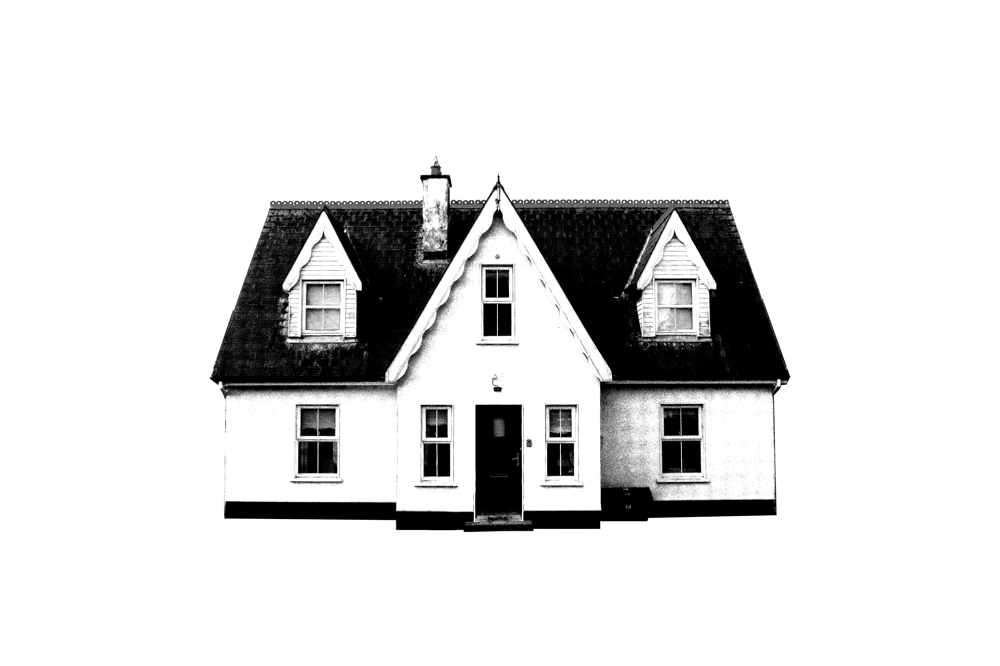

House of Multitudes

In the psychology of the modern civilized human being, it is difficult to overstate the significance of the house. Since as early as the neolithic era, humankind has defined itself by its buildings. Buildings for washing, buildings for socializing, buildings for protection, even buildings for the commemoration of the dead. But of all the structures mankind has invented for itself, there is little doubt that the house is that which it relies upon most completely for its continued survival.
The house is one of the key elements that separates modern humanity from its more primitive antecedents. No other creature goes to such lengths to create lasting, permanent shelter for itself, nor regards such shelters with such reverence and import. Why do human beings of our modern age foster this tremendous sympathy towards their homes? There are many reasons, of course, but perhaps it is due in some small part to seeing them as a reflection of ourselves.
The anatomy of the house is such that this analogy is less superficial than at first it may seem. To carry it further, if we were to dissect a house as we might a human cadaver, we would find ourselves able to isolate and describe its various appendages and their functions in a decidedly anatomical fashion. There is even a fair number of direct comparisons to be drawn between those organs of a house and those of a human body.